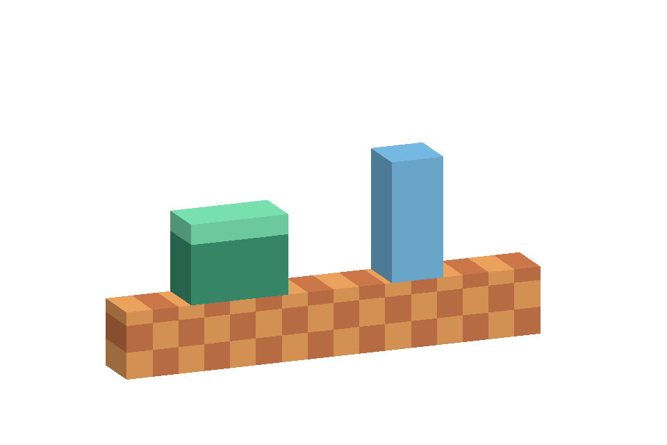
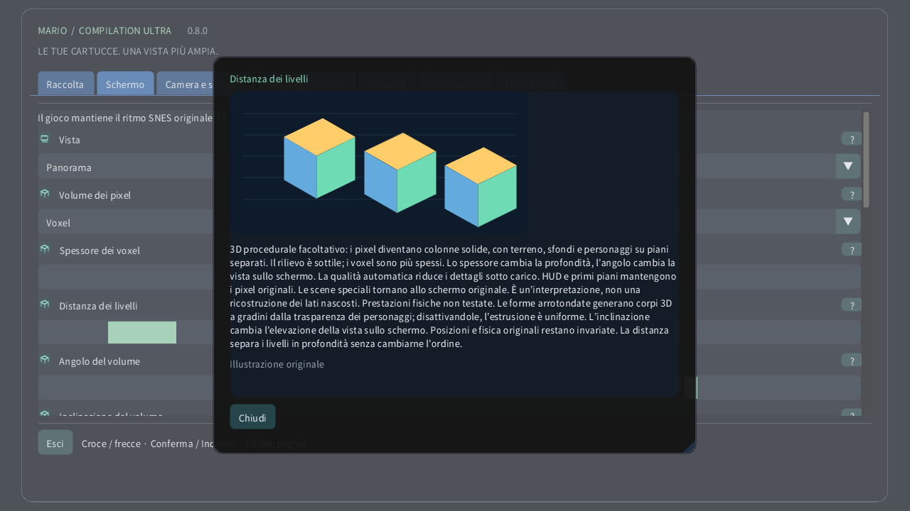

Volume dei pixel

Su computer o dispositivo tattile, apri Schermo → Volume dei pixel. Prova prima Rilievo dei pixel per una profondità leggera, poi Voxel. Lo spessore cambia il corpo di ciascun pixel; la distanza separa i livelli senza cambiarne l’ordine. Su Quest usa la pagina Volume del telecomando spaziale. Sull’orologio la corona ingrandisce dall’area intera fino allo schermo originale.
- 0 · 2D originale
- 1 · Rilievo dei pixel
- 2 · Voxel
3D procedurale facoltativo: i pixel diventano colonne solide, con terreno, sfondi e personaggi su piani separati. Il rilievo è sottile; i voxel sono più spessi. Lo spessore cambia la profondità, l’angolo cambia la vista sullo schermo. La qualità automatica riduce i dettagli sotto carico. HUD e primi piani mantengono i pixel originali. Le scene speciali tornano allo schermo originale. È un’interpretazione, non una ricostruzione dei lati nascosti. Prestazioni fisiche non testate. Le forme arrotondate generano corpi 3D a gradini dalla trasparenza dei personaggi; disattivandole, l’estrusione è uniforme. L’inclinazione cambia l’elevazione della vista sullo schermo. Posizioni e fisica originali restano invariate. La distanza separa i livelli in profondità senza cambiarne l’ordine.
Impostazioni illustrate
- Spessore dei voxel
- 1–16 px
- Distanza dei livelli
- 1–12 px
- Angolo del volume
- −30° … +30°
- Inclinazione del volume
- −30° … +30°
- Forme voxel arrotondate
